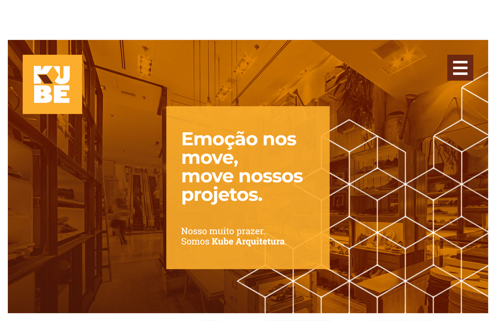
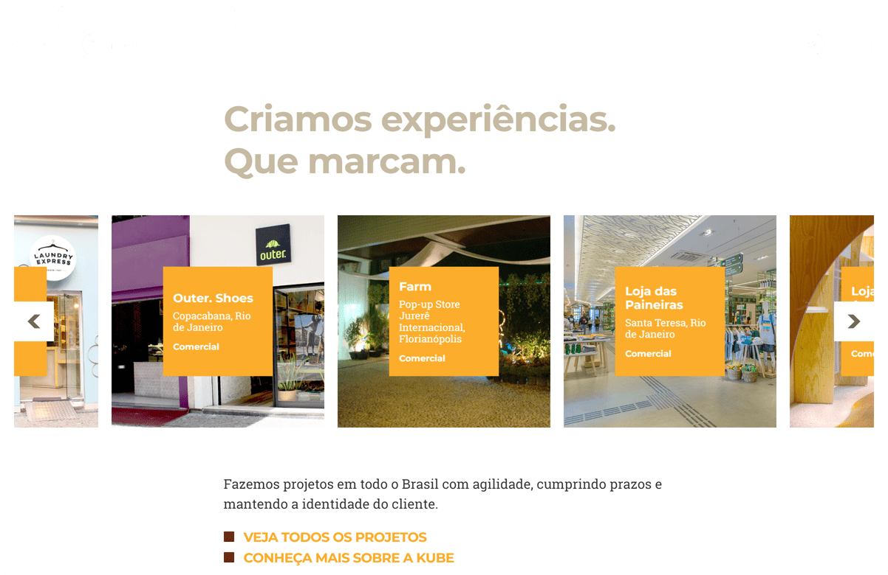
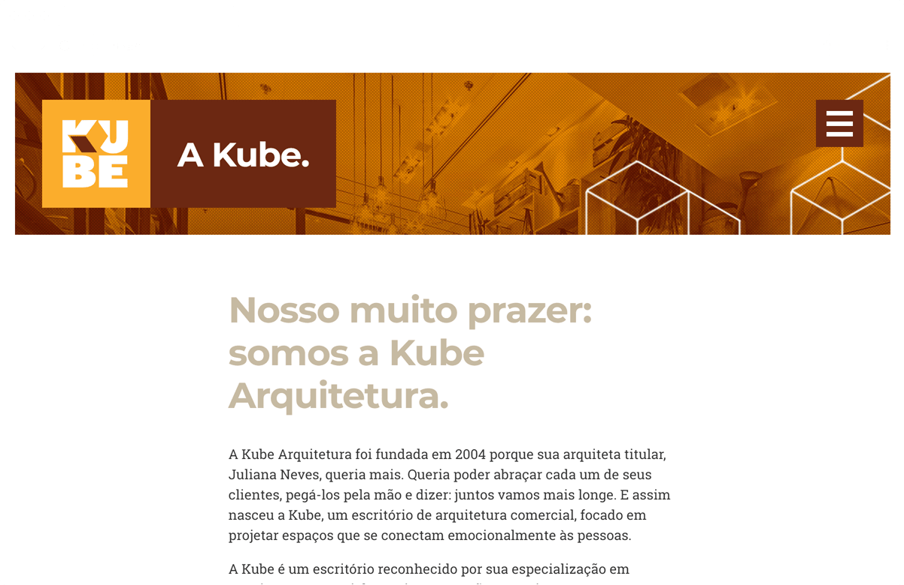
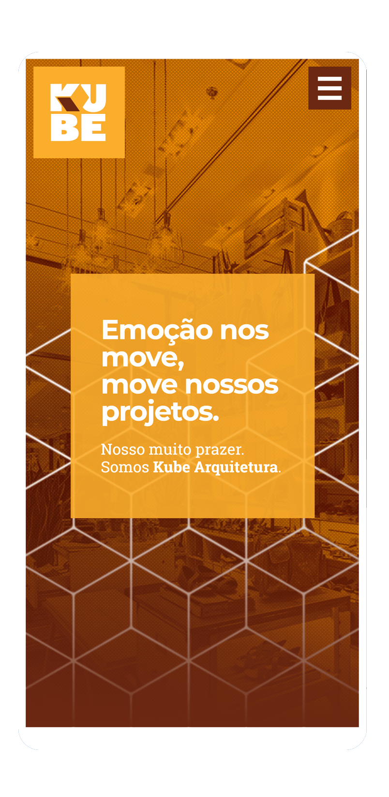

<div class="modal__wrapper">
<div class="modal__scroller">
<div class="modal__header">
<h2 class="modal__title">Kube Arquitetura</h2>
<h3 class="modal__tags">
<span class="modal__tag">UX/UI</span>
<span class="modal__tag">Branding</span>
<span class="modal__tag">Front End</span>
</h3>
</div>
<div class="modal__content">
<div class="modal__editable">
<p>Kube Arquitetura is an architecture firm that has built commercial projects for many of the most important brands - and their stores - in Brazil. Their mission is to project not only for the eyes, but for all senses.</p>
<p>In this sense, this was a very interesting project that I was fortunate enough to build from scratch, since their first ventures into the world of commercial architecture. I created their brand tone, logo, stationary and website.</p>
<p>We've gone through a few website layouts in the last 10 years, but for actual version, I made not only the layout, but all front end development and backend integration myself.</p>
<p>You can check their site at: <a href="https://kubearquitetura.com.br/" target="_blank">kubearquitetura.com.br</a></p>
<figure class="modal__image--full">

</figure>
<figure class="modal__image--full">

</figure>
<figure class="modal__image--full">

</figure>
<figure class="modal__image--small">

</figure>
</div>
</div>
</div>
</div>
